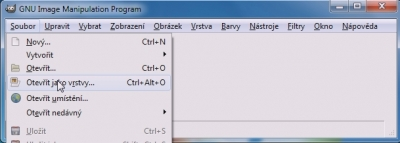
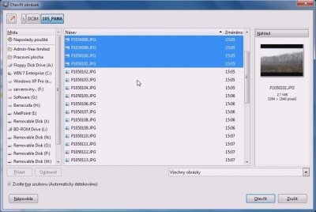
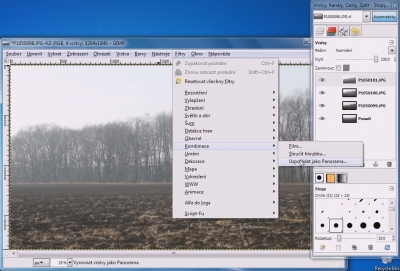
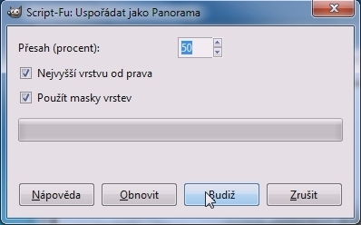

Web je již jen v režimu pro čtení a není možné přidávat nové komentáře nebo dotazy do fóra. Díky za přízeň.
Main menu
You are here
Panorama s Pandorou
17. March 2012 - 0:28 — nicefox1
- Stáhneme si plugin Pandora
- česky, přeložený mnou na mediafire.com
- originál anglicky na shallowsky.com - Ze stáhleho zipu (týká se pouze počeštěné verze) extrahujeme soubor s příponou .scm a vložíme jej do složky s názvem scripts v adresáři Gimpu
[C:\Users\<jméno uživatele>\.gimp-2.6\scripts] - Skript(plugin) již máme nainstalovaný, můžeme tedy spustit Gimp
- Poté dáme Soubor→Otevřít jako vrstvy...
 - Vybereme nachystané fotky a potvrdíme
 - Fotky se nám otevřely do vrstev. Jdeme do Filtry→Kombinace→Uspořádat jako Panorama...
 - Pokud jste fotili zleva doprava, hodnoty necháme jaké jsou. Pokud jste fotili opačně, odškrtněte si "Nejvyšší vrstvu od prava" a klikněte na kouzelné tlačítko Budiž :)
 - Nyní nám vzniklo panorama, ale zůstalo s průhledným pozadím, takže ho budeme muset ustříhnout.. na to už doufám bude stačit video ;)
{kind=link}
{kind=link}
{kind=link}
{kind=link}
Pokud se vám tento článek líbil, nebojte se mu dát "like" nebo +1 ;)
Kategorie:
Web je již ukončen. Nebude zde přibývat žádný nový obsah. Případné dotazy prosím na l.bacovsky(a)outlook.cz
Comments
Re: Panorama s Pandorou
Re: Panorama s Pandorou
Re: Panorama s Pandorou
Re: Panorama s Pandorou
Re: Panorama s Pandorou
Re: Panorama s Pandorou
Re: Panorama s Pandorou
Add new comment